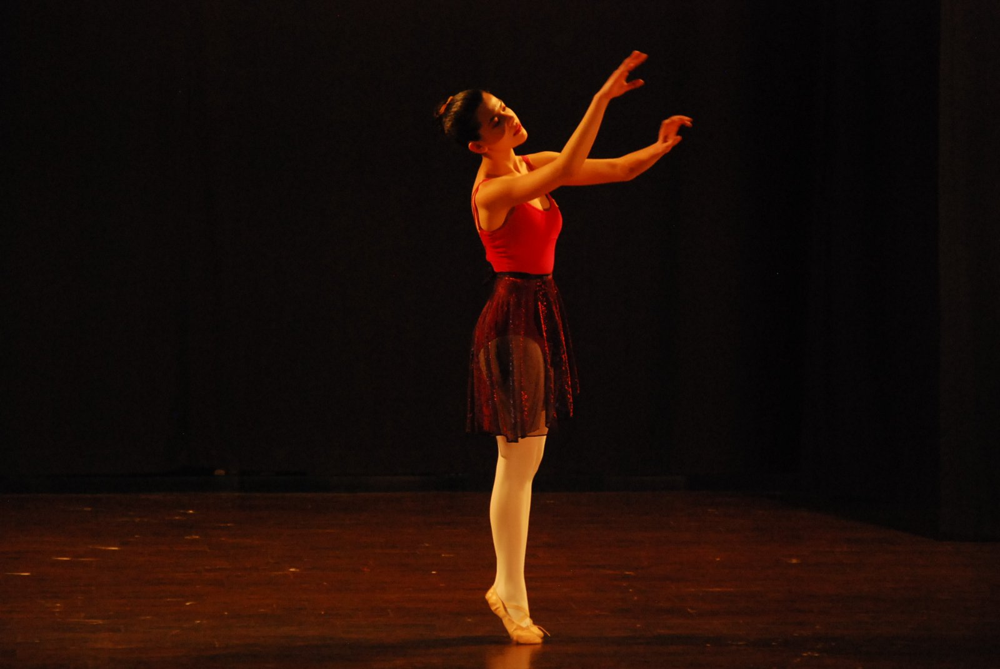

"אני לא יודעת מאיפה להתחיל"
עבר הרבה זמן, הגוף השתנה, ולא ברור איך מתאמנים נכון בלי להיפצע ובלי להתייאש.
שיעורי בלט לילדים ולנשים · בסטודיו או מהבית
בין אם את חולמת לחזור לבלט אחרי שנים, ובין אם הילדה שלך רק מתחילה לגלות את הריקוד — כאן לומדים בקצב שלך, בקבוצה חמה ותומכת, בלי לחץ ובלי לנסוע שעות.

שנה חדשה התחילה.
זה בדיוק הזמן לחזור לרקוד.
אולי גם את מרגישה ככה
הרבה מאיתנו רקדו פעם, ואז החיים קרו. אחרות תמיד חלמו להתחיל ולא העזו. והורים רבים רוצים לתת לילדים את הקסם הזה, אבל לא בטוחים איפה ואיך.
עבר הרבה זמן, הגוף השתנה, ולא ברור איך מתאמנים נכון בלי להיפצע ובלי להתייאש.
הסטודיו הנכון מרגיש רחוק: רמה גבוהה מדי, אווירה תחרותית, או נסיעה ארוכה בסוף יום עמוס.
בין עבודה, בית וילדים — קשה להתחייב. וגם קשה להתחייב לחוג לילד שעוד לא יודע מה הוא אוהב.
אם הנהנת בראש לפחות פעם אחת — את לגמרי לא לבד. בשביל זה בדיוק המקום הזה קיים.
השיעורים
שיעור בלט בקבוצה, פעם או פעמיים בשבוע — פיזית בסטודיו או דיגיטלית מהסלון. נעבור יחד על טכניקה, כושר, גמישות וכל מה שרקדנית צריכה.
בסטודיו או אונליין, לפי מה שנוח לך. באווירה רגועה שבה רואים כל אחת.
שיעורים מוקלטים בכמה רמות, להתאמנות עצמאית מתי שמתאים לך.
כל הדגשים החשובים במקום אחד — כדי שתדעי בדיוק על מה לשים לב.
איך תצאי מכאן
עם סל של טכניקות, ביטחון בגוף — והרגשה שאת שוב בלרינה.
נעים להכיר
רקדתי בלט 11 שנה, ואז — כמו להרבה מאיתנו — זה נעצר. עברו שנים, והגעגוע רק גדל. כשניסיתי לחזור, גיליתי כמה קשה למצוא מקום שבו ארגיש בנוח, שיתאים לרמה שלי, ושלא אצטרך לנסוע אליו שעות.
אז החלטתי לקחת את זה לידיים, וליצור בעצמי את המקום שכל כך חיפשתי. מקום שמרגיש כמו שיחה עם חברה שמבינה בדיוק מה עובר עלייך.
למה זה עובד
כמה רמות, גם בשיעורים וגם בספריית הסרטונים. מתחילות בדיוק מאיפה שאת נמצאת.
מגיעים לסטודיו או מצטרפים מהבית. הבלט מתאים את עצמו לחיים שלך, לא להפך.
הוראה מוסמכת ודגשים מסודרים, כדי שתתקדמי בביטחון ותשמרי על הגוף.
בלי תחרותיות ובלי שיפוטיות. רק אנשים שאוהבים לרקוד, כמוך.
סרטונים וספר דגשים, כדי שתוכלי להתאמן לבד ולהרגיש את ההתקדמות.
לילדים: מקום רך לגלות אם הבלט מדבר אליהם, לפני שמתחייבים לשנה שלמה.
רגעים מהמסע
מילים מהסטודיו
בקרוב יהיו כאן מילים של רקדניות ורקדנים — אולי גם שלך.
המלצה תתווסף בקרוב
המלצה תתווסף בקרוב
המלצה תתווסף בקרוב
שאלות נפוצות
ברור! ואת ממש לא לבד — גם אני חזרתי אחרי שנים של הפסקה. זה בדיוק המקום להתחיל מחדש — בעדינות, בקצב שלך, ועם כל ההתלהבות של הפעם הראשונה.
כן. יש כמה רמות שונות, וגם ספריית הסרטונים בנויה ברמות — כך שתמיד תמצאי את מה שמתאים לך עכשיו, ותוכלי להתקדם כשתרגישי מוכנה.
פשוט שולחים לי הודעה בוואטסאפ. נדבר קצת, אשמע מה את מחפשת (או מה הילד/ה מחפש/ת), ונמצא יחד את הקבוצה והפורמט שהכי מתאימים.
לא צריך להיות מוכנה. לא צריך להיות "ברמה". צריך רק הודעה אחת קטנה — ומשם נמשיך יחד, צעד אחר צעד.
שלחו לי הודעה בוואטסאפכל הודעה נקראת ונענית באופן אישי — על ידי.